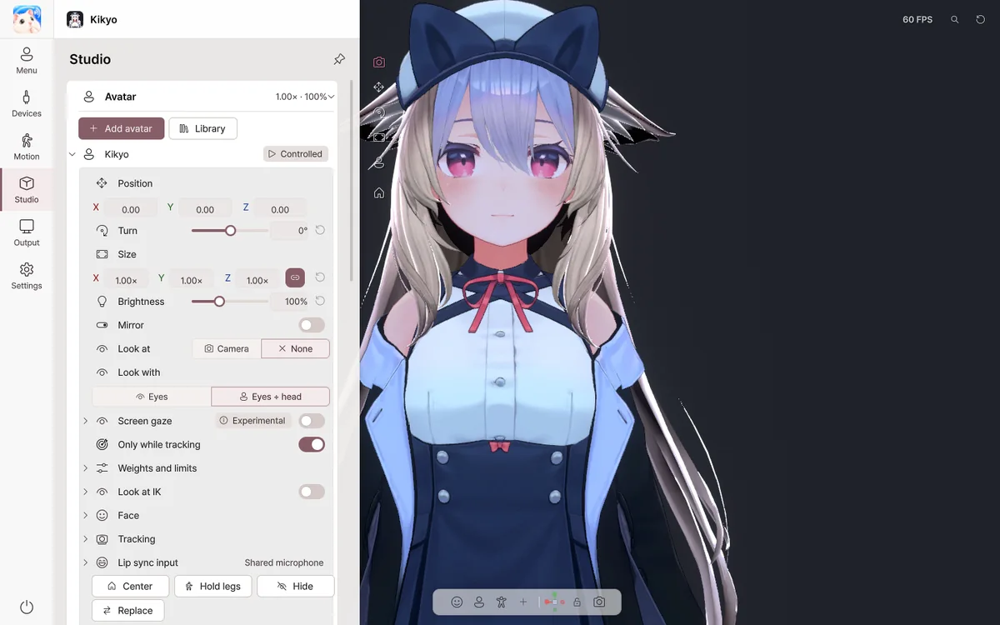
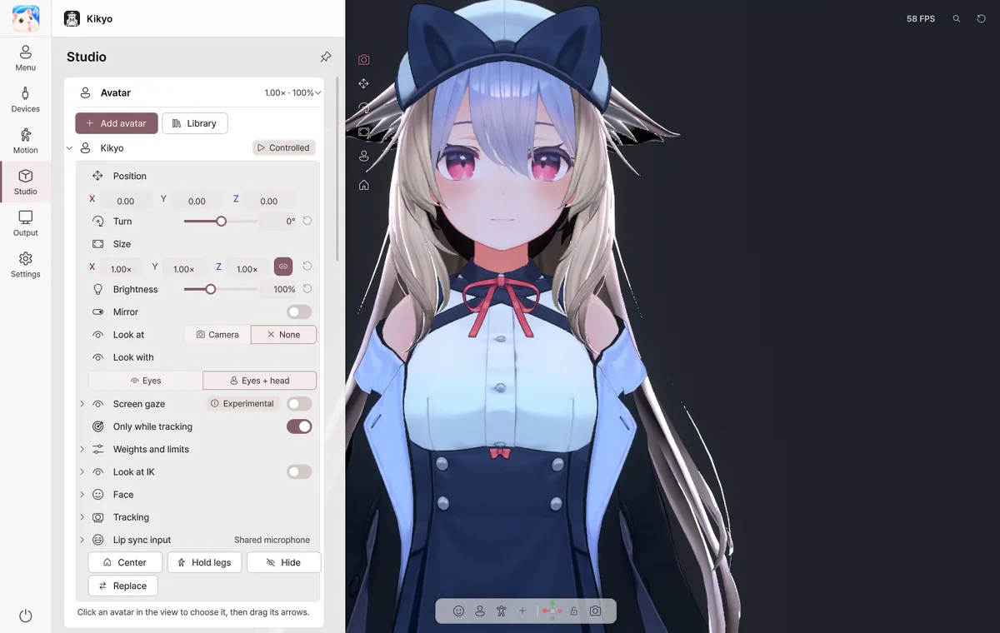
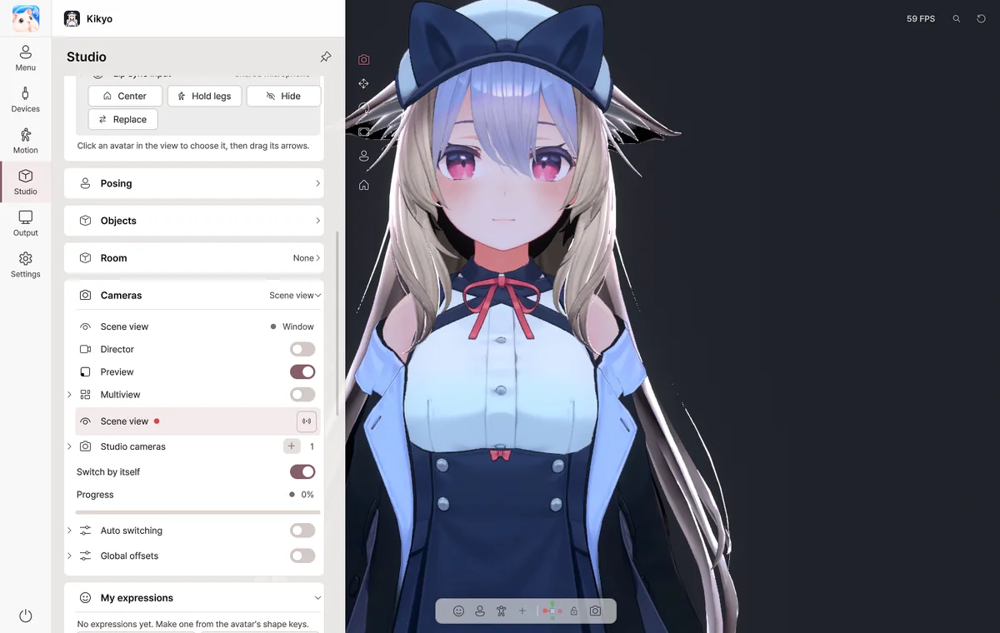
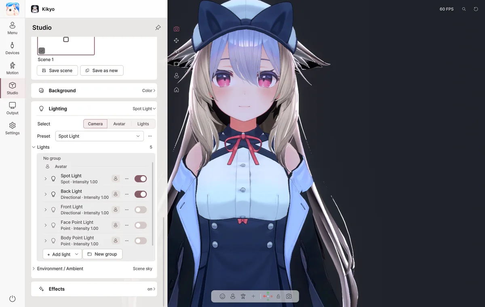

Studio
Scene is now Studio. A studio saves its room, scene-owned objects and lights, avatar placement and virtual cameras together. Avatar-owned settings follow that avatar into other studios; studio-owned settings belong only to the current studio. The scene view you edit in the app is not necessarily the broadcast camera seen in OBS.

Saving and switching studios
- Go to Studio → Scenes. Create or select a scene, then set up its background, room, avatars, lights, props and cameras.
- Save the scene after changing it. When you load another scene, its saved arrangement returns. Search by name or choose its thumbnail.
- Set ownership deliberately: lights or props that belong to an outfit should be avatar-owned; a spotlight or decoration unique to one set should be studio-owned.
- Before filming, verify what is on air in the receiving application. You can rotate the work view while a saved studio camera continues broadcasting without moving.
Avatars and multi-avatar control (Pro)

- Add avatar places another avatar in the current studio. Select the avatar's card before editing its position, rotation, size, pose or face settings; edits apply to the currently selected avatar, not automatically to everyone.
- Switch control moves your tracking input to the chosen avatar. The one you leave can keep its last movement or use a configured rest/idle behavior.
- Copy/same movement applies one tracking source to multiple avatars. Joint rotation is adapted across different body proportions, so characters follow the same action without necessarily occupying the identical world coordinates.
- Lip-sync target: All moves the mouths of all controlled avatars; Main targets the currently primary one; Off does not apply shared lip sync. Use Main for a multi-character scene where only one character speaks.
- Move (X/Y/Z) changes where the actor stands; rotation changes its facing; scale affects its size relative to all fixed cameras, lights and props. Changing size often requires reframing a close-up.
Studio cameras (Pro): position and aim are independent

The main window shows the scene view you freely manipulate for editing. A studio camera stores its own position, direction, lens and transition behavior and sends that picture to Spout2, NDI and other broadcast outputs. Switching on-air cameras does not take control of your editing view.
- In Studio → Cameras, press + to create a camera. A new camera normally starts by following the edited avatar and framing its head.
- Click a camera row to edit its position method (Body) and aim method (Aim). You may reorder camera rows by dragging.
- Set the scene view to the desired picture and use ⋯ → Put on the current view to match a camera's follow offsets and framing to what you see. Merely changing its Body/Aim mode uses the numbers already saved in the new mode, which may cause a visible jump.
- Select the camera for On air and check the result in OBS or your NDI receiver. The app window remains the scene view.
Camera position: what actually moves?
| Method | Result |
|---|---|
| In place | The camera stands still at its stored X/Y/Z position. If the character walks away, it leaves the shot. Best for a locked-off studio camera. |
| Locked on | The camera sits exactly at the target point. A head-bone target may put it inside the head, so this is more useful for POV/first-person setups than an ordinary face close-up. |
| Follow at a distance | The camera stays at a relative X/Y/Z offset from the target, moving with it as it walks, leans or moves. |
| Orbit the target | Like distance follow, but the ring angle rotates the camera position around the target. A quarter-turn provides a different side shot without moving the actor. |
Follow distance X/Y/Z is an offset measured in metres from the target, not a percentage of the screen. Increasing X moves the camera sideways; Y raises its position; Z moves it in front of or behind the subject according to its sign and the binding mode. If the shot suddenly disappears, change the offset in small steps or use Put on the current view again.
Position smoothing (X/Y/Z) controls how late each axis follows. Zero follows immediately, also making small tracking jitter more noticeable. Higher values glide after the target, smoothing movement at the cost of lag. Raising Y only smooths jumping or bending while lateral tracking remains responsive. Rotation smoothing shows only the axes supported by the current binding mode: yaw (turn left/right), pitch (look up/down), and roll (side tilt).
“Lock to the target” rotation: a practical example
Suppose the camera is placed one metre to the right and two metres behind the character. The character then turns left by 90 degrees.
| Binding mode | What happens to the camera's position |
|---|---|
| World space | The offset stays aligned to the room. The character turns within a more-or-less fixed room-relative shot and may present their side to the camera. |
| Simple follow | The camera stays generally behind the target with an easy follow rule; it does not separately maintain the specified sideways offset. |
| Turn with target, world up | The camera position rotates around the target as its yaw changes, but the world's vertical axis stays upright. A head roll does not tilt the room's horizon. |
| Turn, no roll | The target's heading and up/down tilt affect the camera's relative position, but sideways roll is excluded. |
| Lock to the target | The camera offset is rotated using the target's full yaw, pitch and roll. Rolling or tilting a head can carry the camera around with it. |
Important: Lock to target rotation does not mean the lens automatically looks at the target. It changes the coordinate frame used to position the camera. For a portrait that always faces the subject, combine the position method with Straight at the target or Framed on screen in the separate Aim controls.
Camera aim: where does it look?
| Aim method | Visible result |
|---|---|
| In place | Uses the saved camera rotation. The target can leave the frame as it moves. |
| With the target | Points in the same direction as the target; it does not look at that target. |
| Straight at the target | Rotates the lens toward the target point while keeping the camera's position controlled separately. Useful for a fixed-camera interview. |
| First person | Uses horizontal/vertical start angle to establish its gaze, often combined with positioning at the actor's head. |
| Framed on screen | Aims at the target while keeping it at the screen-coordinate point you choose. 0.5 / 0.5 places the subject at the centre. Horizontal 0.33 produces a left-third interview layout. |
- Target can be an actor or a specified bone such as the head. A head target follows nodding; a root target follows the body with less head movement.
- Look-at offset X/Y/Z changes which point relative to the target you aim at, in metres. For example, lower the Y offset slightly to frame the face or mouth below the head-bone origin.
- Aim smoothing delays rotation toward a moving target: 0 snaps instantly, higher values soften direction changes but can cause the subject to momentarily move away from its requested location.
- On-screen X/Y (0–1) changes the target's composition, not the avatar's world position. Larger X moves the requested framing point to the right; larger Y moves it down the image.
Lens, shake, transitions and animation

| Control | Lower vs. higher |
|---|---|
| Field of view (1–179°) | Lower: magnified, tighter shot with less background. Higher: wider shot with more surroundings and potentially stretched edges. |
| Orthographic size | Increasing this value shows a larger area and makes the character smaller, without perspective foreshortening. |
| Near/far clipping | Nearby or distant objects outside these limits disappear. Too-large near clipping can cut through a face or prop; too-small far clipping removes distant scenery. |
| Aspect ratio | 16:9 suits horizontal streams, 9:16 vertical video. Changing it alters what fits horizontally, so recheck composition. |
| Handheld intensity (0–1) | Low feels tripod-like; high exaggerates handheld position sway. |
| Handheld speed (0–2) | Low wobbles slowly; high vibrates faster. Speed and intensity are separate. |
| Cut / Crossfade (0–5 s) | Cut changes cameras immediately. Crossfade blends their pictures over the selected time; longer feels gradual. |
| Camera animation duration (1–15 s) | Length of one animated motion. Loop type/count affect whether and how long it repeats. |
| Director animation speed (0–5) | Changes the speed at which camera animations progress; faster completes the same path sooner. |
| Director FOV offset (−30° to +30°) | Temporarily narrows/widens the director's lens relative to each camera's stored base FOV; it does not rewrite every camera's original lens. |
Director controls which studio camera is on air. Multiview displays several preview cells in your working interface only after you enable its separate switch; turning on the director alone does not open the grid. Grid size 2–4 changes the number of cells per axis. Increasing downsampling (1–8) makes preview cells cheaper to render but less sharp; reducing the preview update rate also reduces work but makes movement in the grid less fluid. These preview settings are not a substitute for configuring your broadcast output quality.
Auto switching can choose cameras by tag and weight. An entry with weight zero is not chosen; greater positive weights make a camera relatively more likely. An animation may restart each time its camera goes on air, or continue depending on its settings. Per-camera Spout2 output (Pro) sends independent streams even when another camera is live, with a maximum of three additional senders; see the OBS setup instructions.
Rooms, props and attachment

- Room picks a studio environment. Position (X/Y/Z) moves the whole room, rotation turns it and scale changes its dimensions relative to the avatars.
- Prop position changes where an object stands. Rotation changes its facing; unlinked X/Y/Z scale can stretch an object but may distort it.
- World-owned props stay in the room. Avatar-owned props follow an avatar across studios; bone-attached props also follow the chosen hand/head bone during gestures and posing. Adjust bone offsets if glasses or held objects intersect the model.
- Use per-studio ownership for stage decorations and per-avatar ownership for costume-related accessories.
Background
Solid colour supplies a flat backdrop. Green/blue work with OBS chroma key, but the same colour on clothing may become transparent. Transparent is the usual choice with Spout2 or NDI alpha; the app's black-looking editing backdrop does not necessarily mean the alpha being sent is opaque. For images, zoom changes the covered area, X/Y offsets move the crop, and cover/crop fills the frame without stretching the image. After changing output aspect ratio, check the image edges again.
Lighting and light-follow behavior
- Light intensity increases brightness; too much clips pale skin and emissive materials. Colour temperature (approximately 1500–12000 K) is warm/orange at the low end and cool/blue at the high end.
- Directional lights illuminate broadly like sunlight; point lights radiate in all directions; spotlights create a cone. Raising range reaches farther surfaces, while raising spot angle covers a wider area with less focus.
- Follow position moves the light with its target. Aim at target rotates the light to face the target. These are independent: a stationary spotlight that aims at a moving head acts like a follow-spot, while a light with both on moves with the person.
- Position/rotation smoothing reduces abrupt light movement; higher values delay reactions. Shadow strength increases darkness and softness blurs shadow boundaries. Ambient light fills unlit areas; reflection strength affects glossy highlights.
- Volumetric spotlight (Pro) makes beams visible in the air. Wider/stronger volumetrics can increase GPU cost and create unwanted haze; raise one parameter at a time.
Effects
Basic and Pro both support standard post-processing; Beautify/HBAO and separate advanced effects are Pro-only.
| Effect | What changing it does |
|---|---|
| Anti-aliasing | Smooths jagged edges. FXAA is cheap but can soften details; SMAA preserves some edges; TAA can leave motion trails. |
| Bloom intensity / threshold / diffusion | Intensity brightens glow; a higher threshold limits it to only the brightest highlights; diffusion spreads the halo over a larger area. |
| Exposure, contrast, saturation | Overall brightness, separation between dark/light and colour vividness respectively. Reducing saturation towards zero produces monochrome. |
| White balance / tint | Alters the cool-warm balance or green-magenta cast, especially visible in skin tones. |
| Vignette | Darkens frame edges; strength sets darkness and smoothness sets how slowly it fades into the centre. |
| Grain / chromatic aberration | Adds film-like noise or coloured fringing around edges. Higher settings are visibly more stylised. |
| Depth of field | Keeps the focus distance sharp and blurs foreground/background. Auto face focus tracks the avatar; a lower f-stop number produces stronger blur. |
| Motion blur | A greater shutter angle makes motion streaks longer; more samples can smooth them at a GPU cost. |
| HBAO (Pro) | Adds contact shadows in creases; too much creates dirty-looking eyes, noses or folds. |
| Beautify (Pro) | Adjusts overall image appearance; avoid stacking too much with the regular bloom and colour effects. |
For transparent broadcasts, test bloom, depth of field and vignette in OBS: they may affect the rendered edge when composited against a different background. Restore individual effects with their reset controls if necessary.